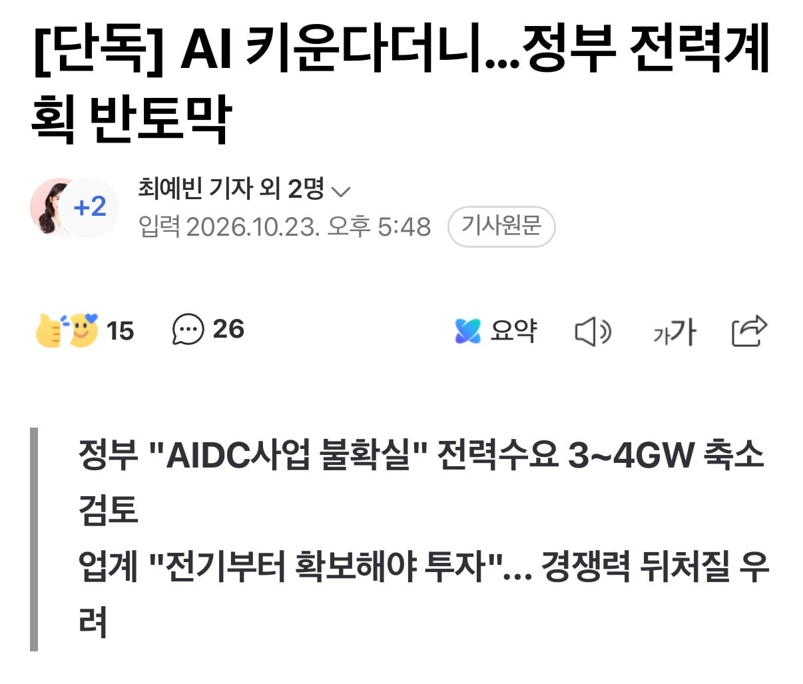
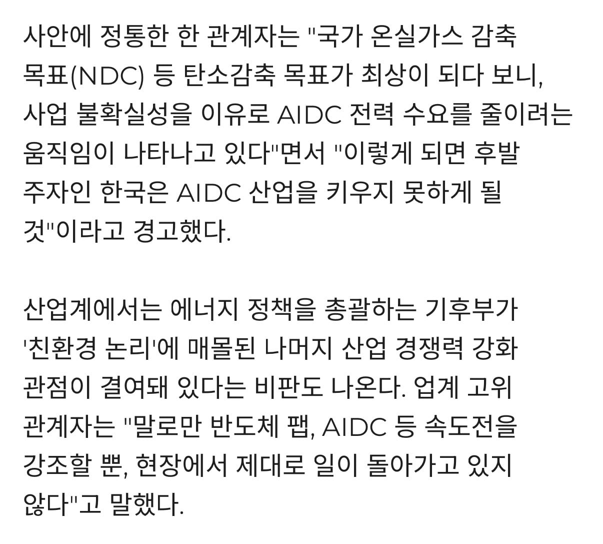
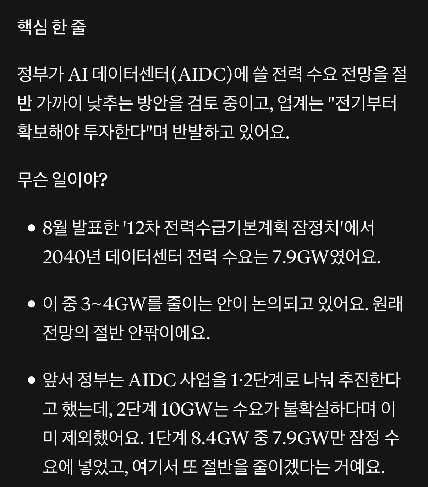

수도권에 짓는건 말도 안되는 소리고
잘 모르는데 원전은 님비 아니냐?
국산 ai는 망했네
졸속행정 드러나는 거지
저 산업에 대해 뭘 알긴 할까
디씨 생태계에서 현재 가장 중요한 문제가 전력이 아니라서 그럼.
일단 수냉 시설이 딸려서 이제야 확충하고 있는 상황인데 이게 현저히 부족하고
디씨 부지 자체도 부족하고, 최신 지피유 지원하는 전력량이 딸리기 시작하는데 이건 전체 전력 캐파가 낮은 게 아니라 디씨 자체에서 높은 전력을 감당 못하게 설계된 탓임.
이제 막 짓기 시작하는 애들아 많아서 전력난을 고려하지만, 일반적으로 그거 해결하고 들어가는 게 수순이고.
전력이 진짜 부족하다는 얘기가 나오려면 27년 후반부터일듯
전혀 아님
지금하는 행태는
“나중에 반도체 산업 활황일텐데 공장부터 지어놓자”
하고 부동산업체 : 아이고 전력이 부족해요
자산운용사 : 물 좀 나중에 쓸 수 있다고 서류좀 주세요
해놓고 나서
??? : 자 이제 삼성, 하이닉스 급 반도체 기업만 생겨나면 되겠다 ^^!
하는거랑 똑같음
AI데이터센터 돌릴 기업도 없는데 뭔 개지랄들인지 모르겠음
무슨 소리하는 거야.
반도체랑 ai dc랑 관련도 없는데 무슨.
암것도 모르는 사람이 대댓을 다네
비유라는거지
정작 AI기술이 그정도로 성숙하지 않았는데
뭔 AI데이터센터 수요가 몇GW이러는건지 모르갰다라는것
더 쉽게 비유하면
ㅈㄴ 개쩌는 전시장을 만들어야한다고 난리치는데
정작 전시할 물건은 없는상황이지
반도체 회사들이 공장 만드는 거랑 디씨는 아예 다른 얘긴데 삼성 하닉급 기업 생겨나는 거랑 디씨랑 뭔 연관이 있다고 생각함? ㅋㅋㅋㅋㅋ
반도체 만들면 그게 디씨에 들어오냐?
엔비디아 가서 지피유에 꽂힌 다음 서버가 들어오는 거지.
지금은 삼성 하닉급 기업이 생겨야 하는게 아니라
해외 ai 기업 수요 밀려들어오는데 이걸 먹어야 하는 상황임
비유라고 ..
개붕이들 진짜 지능 낮은건 알았는데 아예 맥락을 모르네
그리고 해외 AI기업 수요는 뭔데?
누구?
그리고 걔네 받는거랑 “우리나라 AI 기술발전”이랑 뭔상관임?
천천히 늘려가면 되지 막 늘리다가 아까운 돈만 헛쓴다
지금 잘될때 기회비용 날리지말고 잘점하자
그니까 제때 원전 쳐지었으면 저지랄도 안했는데
탈원전은 사기가 맞다
한전 빚도 안생길수 있었음
이렇게 자충우돌 하면서 발전 하는거지
처음부터 잘될리가 있나 it때도 그랬음
애미 뒤진소리하지말고 지금 전세계가 에너지싸움하는데 시발 기후고 나발이고 포기하고 걍 존나 끌어다가 써야한다니까
원전기술 다시 회복 가능할때 빨리 다시 지어라
진짜 답답해 뒤지겠음 원전없으면 감당못할전력은데 자꾸 쥐꼬리만한 좆만한 친환경에너지 노래를 쳐부르고있음
공약 내놓으면 뭐하냐 ㅋㅋㅋ 걍 엎으면 그만인데
대 주 모
뭐 특별히 세우고 싶은 전력원이 계실까요?
원전 지어도 전력망이 부족해서 수도권으로 전력 보내지를 못함.
차라리 수도권 한복판에 원전을 지어야함.